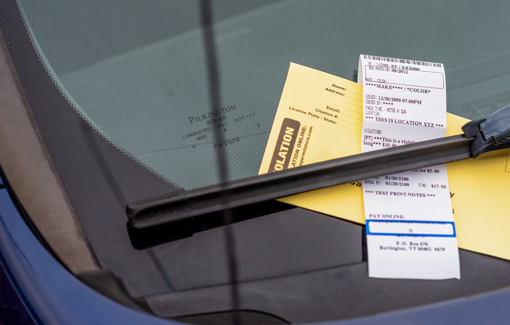

Quaerens helps you generate a professional parking appeal letter for free. Challenge unfair tickets, unclear signage, machine faults, errors, or genuine mitigating circumstances.
Unclear signage
Appeals may succeed where signs were hidden, confusing, missing, or contradictory.
Ticket errors
Wrong registration, location, date, time, or payment details can support an appeal.
Mitigating reasons
Medical issues, emergencies, disability, or genuine mistakes may be relevant.
Free letter
Create a professional appeal letter without fees, commission, or deductions.
Situation
If you’ve received a parking ticket, PCN, or private parking charge, it may be worth checking whether the charge is valid before paying. Many appeals are based on unclear signs, payment problems, incorrect details, unfair enforcement, or genuine mitigating circumstances.
Quaerens helps you turn your situation into a clear, structured appeal letter that you can send to the council or parking operator.
Common appeal grounds:
How it works
Enter your parking ticket details, location, reason for appeal, and any evidence you have.
The tool creates a structured letter using the facts and appeal points most relevant to your case.
Submit your appeal through the council portal, parking company website, email, or post.
What evidence helps?
Act quickly
Parking tickets usually have a deadline for appeal. In many cases, acting quickly gives you the best chance of keeping the reduced amount protected while the appeal is considered.
Our free letter tool helps you prepare your appeal clearly so you can submit it before time runs out.
Generate My Letter NowDon’t send a rushed message. Use a structured appeal letter that explains the facts, evidence, and reason the charge should be cancelled.
Start Free Appeal LetterWhat are my rights?
Drivers should be able to understand the parking terms before being bound by them.
You can challenge a council PCN or private parking charge before deciding whether to pay.
Photos, receipts, permits, timestamps, and correspondence can make your appeal stronger.
If rejected, some cases can be escalated to the relevant tribunal or independent appeals body.
Frequently asked questions
“The signs were partly hidden and the parking terms were not visible from where I parked.”
— Signage appeal example
“I paid using the app, but the ticket was still issued because the system failed to register payment.”
— Payment evidence example
“The ticket had the wrong vehicle details and did not match the circumstances shown in the evidence.”
— Technical error example
Take the next step
Enter your ticket details, explain what happened, and create a structured appeal letter you can send to the council or parking operator.
Generate My Appeal Letter